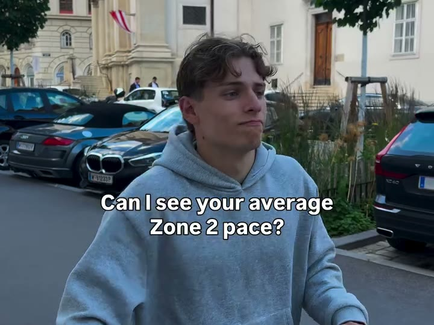
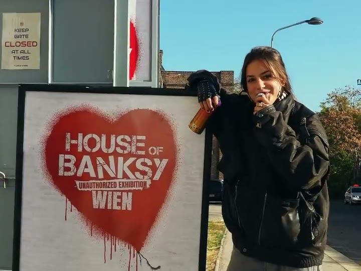
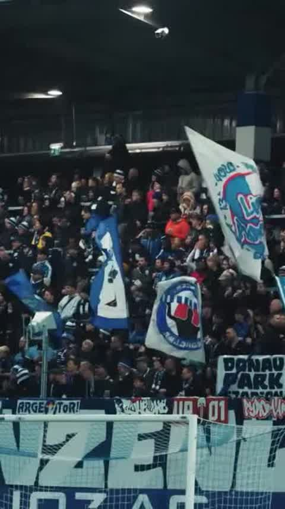

Skit für meinen Laufkanal
Kurze Szene über die Frage, die jeder Läufer kennt. Die Pointe sitzt in den ersten Sekunden, damit auch Leute dranbleiben, die mir noch nicht folgen.
- Aufrufe
- 729.121
- Likes
- 26.706
- Kommentare
- 76
- Shares
- 3.205
Ich bin Valentin Stickler. Ich plane die Videos mit dir, drehe bei dir vor Ort und schneide sie selbst. Nochdazu arbeite ich im Schnitt bei Live-Sportproduktionen fürs Fernsehen.
Kurze Szene über die Frage, die jeder Läufer kennt. Die Pointe sitzt in den ersten Sekunden, damit auch Leute dranbleiben, die mir noch nicht folgen.
Moderation direkt im Bubble Planet Erlebnismuseum in Wien, mit Verlosung von Tickets.
Ein Produzent beantwortet im Studio, was der Einstieg in die Musikproduktion kostet. Zahlen und Begriffe kommen als Einblendung.
Eine Darstellerin stellt die Banksy-Ausstellung in der METAStadt vor und ruft zum Ticket-Gewinnspiel auf.
Festtagsmode von KiK im Test, gedreht im Geschäft, mit Verlosung von Gutscheinen.
Ein Moment, in dem sich viele Läufer wiederfinden, erzählt über einen einzigen Text-Hook.
Erster Lauf und heutiger Lauf nebeneinander, jeweils mit den Strava-Werten von damals und heute.
Zwei Läufer schätzen, wie schnell sie einen Kilometer schaffen. Dann wird es getestet.
Ein Alltagsmoment aus Sicht eines Patienten. Das Problem, das doc2you löst, versteht man ohne Erklärung.
Wir rufen an und stoppen die Zeit. Die Frage im Hook wird erst am Ende beantwortet.
Ich wohne in Wien und produziere als Einzelunternehmer Videos für Social Media.
Nochdazu arbeite ich im Schnitt bei Live-Sportproduktionen fürs Fernsehen, für ORF, Sky Sport Austria und Uppercut Broadcast. Ich schneide Highlights der österreichischen Bundesliga und der Fußball-WM und mache Live-Zeitlupen in der Bundesliga und in anderen Sportarten.
Seit fünf Jahren trainiere ich im Gym, dazu kommen Laufen und Triathlon. Das zeige ich auf @stickley_running. Partner des Kanals ist Torino Protein.
Ich suche Videos, die weit besser liefen als der Rest ihres Kanals, und übertrage Aufbau und Tempo auf deinen Betrieb.

Reichweite bringt neue Leute (TOFU). Inhalte mit Mehrwert binden sie und schaffen Vertrauen (MOFU). Klare Angebote machen aus ihnen Kunden (BOFU).
Ich plane mit dir, komme zum Dreh in deinen Betrieb und liefere fertig geschnitten.

Live gibt es keinen zweiten Versuch. So schneide ich auch: auf den ersten Laut, ohne tote Pausen.
